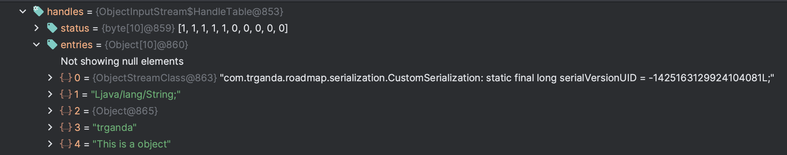
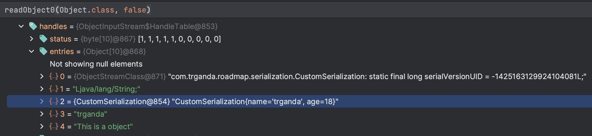

如不特意说明，反序列化一律指代 Java 中的反序列化。
反序列化的概念
在前面介绍 RMI 的通信流程和攻击方法中，已经看到过 Java 反序列化的身影。
下面具体说说，反序列化是什么，以及它为何容易引起安全问题。
序列化与反序列化（marshal/unmarshal）是一种存储和转化数据（将数据变为内存中对象或变量，反之亦然）的方式，例如 json、xml 等文件格式，它是一种通用的标准。但它们的缺点是不支持复杂的数据结构，只有基本的数据类型，数值，字符串，布尔值等
为例支持更复杂的内容的传输，才出现了诸如 Jackson、Fastjson、XStream 等第三方的序列化库。
而 Java 则内置了自己的序列化与反序列化机制，它有自己定义的标准 Java Object Serialization Specification: Contents (oracle.com)。 序列化的目的主要是为了便于将程序运行时的数据以某种约定好的形式在网络中传输，从而实现一些功能，例如 RPC（Remote Procedure Call）。
序列化容易引起安全问题的原因之一在于，序列化机制提供的动态特性，例如修改变量的值，或是执行某些方法。
Java 反序列化
Java 的反序列化操作，由接口 Serializable 定义，如果去 JDK 中随便找一个类（例如：HashMap），大概率都能看到两个方法，它们都来自 Serializable 接口：
readObject：将对象序列化成二进制数据writeObject：将二进制数据恢复成一个对象
而 Java 在序列化时，会调用对象中的 writeObject(ObjectOutputStream out) 方法，开发者可以通过编写 writeObject 方法来自定义序列化的行为，从而随意写入所需的内容；反序列化时则会调用 readObject 方法，按照 writeObject 中写入的顺序，读取内容并进行处理。
修改默认行为
来看个例子，有如下 CustomSerialization 类：
public class CustomSerialization implements java.io.Serializable {
public String name;
transient public int age;
public CustomSerialization(String name, int age) {
this.name = name;
this.age = age;
}
private void writeObject(ObjectOutputStream s) throws IOException {
s.defaultWriteObject();
s.writeObject("This is a object");
}
private void readObject(java.io.ObjectInputStream s)
throws IOException, ClassNotFoundException {
s.defaultReadObject();
String message = (String) s.readObject();
System.out.println(message);
}
public static void main(String[] args) {
try (ObjectOutputStream oos =
new ObjectOutputStream(Files.newOutputStream(Paths.get("target/person.bin")))) {
oos.writeObject(new CustomSerialization("trganda", 18));
} catch (IOException e) {
e.printStackTrace();
}
}
}其中重写了 writeObject 方法，在执行完默认的 s.defaultWriteObject()，又写入了一个字符串 "This is a object"。下面通过 SerializationDumper 工具查看生成的序列化数据
STREAM_MAGIC - 0xac ed
STREAM_VERSION - 0x00 05
Contents
TC_OBJECT - 0x73
TC_CLASSDESC - 0x72
className
Length - 53 - 0x00 35
Value - com.trganda.roadmap.serialization.CustomSerialization - 0x636f6d2e747267616e64612e726f61646d61702e73657269616c697a6174696f6e2e437573746f6d53657269616c697a6174696f6e
serialVersionUID - 0x6e 5d bc 20 2c b5 58 15
newHandle 0x00 7e 00 00
classDescFlags - 0x03 - SC_WRITE_METHOD | SC_SERIALIZABLE
fieldCount - 1 - 0x00 01
Fields
0:
Object - L - 0x4c
fieldName
Length - 4 - 0x00 04
Value - name - 0x6e616d65
className1
TC_STRING - 0x74
newHandle 0x00 7e 00 01
Length - 18 - 0x00 12
Value - Ljava/lang/String; - 0x4c6a6176612f6c616e672f537472696e673b
classAnnotations
TC_ENDBLOCKDATA - 0x78
superClassDesc
TC_NULL - 0x70
newHandle 0x00 7e 00 02
classdata
com.trganda.roadmap.serialization.CustomSerialization
values
name
(object)
TC_STRING - 0x74
newHandle 0x00 7e 00 03
Length - 7 - 0x00 07
Value - trganda - 0x747267616e6461
objectAnnotation
TC_STRING - 0x74
newHandle 0x00 7e 00 04
Length - 16 - 0x00 10
Value - This is a object - 0x546869732069732061206f626a656374
TC_ENDBLOCKDATA - 0x78
可以看到，额外写入的字符串 "This is a object" 被放在了 objectAnnotation 字段，而非具体属性中。
Static 和 Transient
从前面解析等内容中可以看到，成员 age 没有被写入序列化数据中，因为它被关键词 transient 修饰了，这个关键词的作用就是标记不希望被序列化的成员。
serialVersionUID
此外对于 static 成员，也不会被序列化。但有一个特殊的成员除外，对于每一个实现了 Serializable 接口的类而言，都有一个成员 serialVersionUID，通常标记为 static final long。
虽然标记为 static，但它默认会被序列化，该成员的一大作用是在反序列化时，JVM 会检查 serialVersionUID 和本地对应类的 serialVersionUID 是否相同，不同则表示不兼容从而抛出异常终止反序列化过程。
写个 Demo 实验一下
public class VersionUIDSerialization implements java.io.Serializable {
public String name;
public transient int age;
public static String bio = "This is a bio";
private static final long serialVersionUID = 1111111111111111111L;
// 其它方法不变...
public static void main(String[] args) {
try (ObjectOutputStream oos =
new ObjectOutputStream(Files.newOutputStream(Paths.get("target/person.bin")))) {
CustomSerialization2 customSerialization2 = new CustomSerialization2("Trganda", 25);
CustomSerialization2.bio = "This is a new bio";
oos.writeObject(customSerialization2);
} catch (IOException e) {
e.printStackTrace();
}
}
}
// StaticSerialization.java 需要在另一个类中进行反序列化
public class StaticSerialization {
public static void main(String[] args) {
try (ObjectInputStream ois =
new ObjectInputStream(Files.newInputStream(Paths.get("target/person.bin")))) {
VersionUIDSerialization person = (VersionUIDSerialization) ois.readObject();
System.out.println(person);
} catch (IOException | ClassNotFoundException e) {
e.printStackTrace();
}
}
}反序列化时输出的内容中，静态成员 bio 并没有被修改。
CustomSerialization2{name='Trganda', age=25', bio='This is a bio'}
查看文件 target/person.bin，成员只有 name，
hexdump -ve '1/1 "%.2x"' target/person.bin
java -jar SerializationDumper-v1.13.jar #贴上上一步的输出结果
STREAM_MAGIC - 0xac ed
STREAM_VERSION - 0x00 05
Contents
TC_OBJECT - 0x73
TC_CLASSDESC - 0x72
className
Length - 54 - 0x00 36
Value - com.trganda.roadmap.serialization.VersionUIDSerialization - 0x636f6d2e747267616e64612e726f61646d61702e73657269616c697a6174696f6e2e437573746f6d53657269616c697a6174696f6e32
serialVersionUID - 0x0f 6b 75 ab 2b c4 71 c7
newHandle 0x00 7e 00 00
classDescFlags - 0x03 - SC_WRITE_METHOD | SC_SERIALIZABLE
fieldCount - 1 - 0x00 01
Fields
0:
Object - L - 0x4c
fieldName
Length - 4 - 0x00 04
Value - name - 0x6e616d65
现在尝试先修改一下 CustomSerialization2 的 serialVersionUID=1111111111111111112L ，再执行 StaticSerialization
mvn exec:java -Dexec.mainClass="com.trganda.roadmap.serialization.StaticSerialization"则会抛出如下异常
java.io.InvalidClassException: com.trganda.roadmap.serialization.VersionUIDSerialization; local class incompatible: stream classdesc serialVersionUID = 1111111111111111111, local class serialVersionUID = 1111111111111111112
at java.io.ObjectStreamClass.initNonProxy(ObjectStreamClass.java:699)
at java.io.ObjectInputStream.readNonProxyDesc(ObjectInputStream.java:2005)
at java.io.ObjectInputStream.readClassDesc(ObjectInputStream.java:1852)
at java.io.ObjectInputStream.readOrdinaryObject(ObjectInputStream.java:2186)
at java.io.ObjectInputStream.readObject0(ObjectInputStream.java:1669)
at java.io.ObjectInputStream.readObject(ObjectInputStream.java:503)
at java.io.ObjectInputStream.readObject(ObjectInputStream.java:461)
at com.trganda.roadmap.serialization.StaticSerialization.main(StaticSerialization.java:12)
强行序列化 Static 和 Transient 成员
如果非要序列化 static 和 transient 成员呢？Java 的序列化机制可以做到这一点，你需要在类中添加一个类型为 ObjectStreamField 的成员 serialPersistentFields
public class FieldSerialization implements Serializable {
public String name;
public transient int age;
public static String bio = "This is a bio";
private static final ObjectStreamField[] serialPersistentFields = {
new ObjectStreamField("age", int.class)
};
public FieldSerialization(String name, int age) {
this.name = name;
this.age = age;
}
public static void main(String[] args) {
try (ObjectOutputStream oos =
new ObjectOutputStream(Files.newOutputStream(Paths.get("target/person.bin")))) {
FieldSerialization fieldSerialization = new FieldSerialization("Trganda", 25);
oos.writeObject(fieldSerialization);
} catch (IOException e) {
e.printStackTrace();
}
}
}查看生成的文件，age 的内容被成功写入了，
STREAM_MAGIC - 0xac ed
STREAM_VERSION - 0x00 05
Contents
TC_OBJECT - 0x73
TC_CLASSDESC - 0x72
className
Length - 52 - 0x00 34
Value - com.trganda.roadmap.serialization.FieldSerialization - 0x636f6d2e747267616e64612e726f61646d61702e73657269616c697a6174696f6e2e4669656c6453657269616c697a6174696f6e
serialVersionUID - 0xed d3 0b 6c 2c 69 35 d7
newHandle 0x00 7e 00 00
classDescFlags - 0x02 - SC_SERIALIZABLE
fieldCount - 1 - 0x00 01
Fields
0:
Int - I - 0x49
fieldName
Length - 3 - 0x00 03
Value - age - 0x616765
classAnnotations
TC_ENDBLOCKDATA - 0x78
superClassDesc
TC_NULL - 0x70
newHandle 0x00 7e 00 01
classdata
com.trganda.roadmap.serialization.FieldSerialization
values
age
(int)25 - 0x00 00 00 19
可如果要写入 static 成员 bio 呢？修改 serialPersistentFields
private static final ObjectStreamField[] serialPersistentFields = {
new ObjectStreamField("bio", String.class)
};却出现了如下异常
java.io.InvalidClassException: com.trganda.roadmap.serialization.FieldSerialization; unmatched serializable field(s) declared
at java.io.ObjectStreamClass$ExceptionInfo.newInvalidClassException(ObjectStreamClass.java:169)
at java.io.ObjectStreamClass.checkDefaultSerialize(ObjectStreamClass.java:911)
at java.io.ObjectOutputStream.defaultWriteFields(ObjectOutputStream.java:1527)
at java.io.ObjectOutputStream.writeSerialData(ObjectOutputStream.java:1509)
at java.io.ObjectOutputStream.writeOrdinaryObject(ObjectOutputStream.java:1432)
at java.io.ObjectOutputStream.writeObject0(ObjectOutputStream.java:1178)
at java.io.ObjectOutputStream.writeObject(ObjectOutputStream.java:348)
at com.trganda.roadmap.serialization.FieldSerialization.main(FieldSerialization.java:28)
跟入调用栈 ObjectStreamClass#checkDefaultSerialize，如果 defaultSerializeEx 不为空就会抛出异常
void checkDefaultSerialize() throws InvalidClassException {
requireInitialized();
if (defaultSerializeEx != null) {
throw defaultSerializeEx.newInvalidClassException();
}
}而 defaultSerializeEx 的创建位于构造方法 ObjectStreamClass(final Class<?> cl)，而问题的根本原因在于 ObjectStreamClass#getDeclaredSerialFields [2]，如果成员类型是静态的则 ObjectStreamField 实例对象的 field 成员为空。
private static ObjectStreamField[] getDeclaredSerialFields(Class<?> cl)
throws InvalidClassException
{
// ...
try {
Field f = cl.getDeclaredField(fname);
if ((f.getType() == spf.getType()) &&
((f.getModifiers() & Modifier.STATIC) == 0)) // [2]
{
boundFields[i] =
new ObjectStreamField(f, spf.isUnshared(), true);
}
} catch (NoSuchFieldException ex) {
}总结来说就是不允许序列化静态成员。
调用链分析
serialVersionUID的检查
根据异常信息跟入 initNonProxy ，从 [1] 中看到 如果 serialVersionUID 不相等则会触发异常。
void initNonProxy(ObjectStreamClass model,
Class<?> cl,
ClassNotFoundException resolveEx,
ObjectStreamClass superDesc)
throws InvalidClassException
{
long suid = Long.valueOf(model.getSerialVersionUID());
ObjectStreamClass osc = null;
if (cl != null) {
osc = lookup(cl, true);
// ...
if (model.serializable == osc.serializable &&
!cl.isArray() &&
suid != osc.getSerialVersionUID()) { // [1]
throw new InvalidClassException(osc.name,
"local class incompatible: " +
"stream classdesc serialVersionUID = " + suid +
", local class serialVersionUID = " +
osc.getSerialVersionUID());
}ObjectStreamClass
在前面的代码中可以看到 ObjectStreamClass 的身影，从注释中看它的作用生成序列化对象的描述符。并且可以通过静态方法 ObjectStreamClass#lookup(Class<?> cl) 在 JVM 中创建一个实例。
Serialization’s descriptor for classes. It contains the name and serialVersionUID of the class. The ObjectStreamClass for a specific class loaded in this Java VM can be found/created using the lookup method.
内部有很多成员，描述了与用于序列化的相关信息
CustomSerialization#readObject
如果自定义了 readObject 方法，简化的调用栈如下
ObjectInputStream.readObject
ObjectInputStream.readObject0
// 解析 TC_OBJECT 类型的数据
ObjectInputStream.readOrdinaryObject
// 从序列化数据流中读取类的描述信息 ObjectStreamClass
ObjectInputStream.readClassDesc
// 检查对应类能否序列化，对 `serialVersionUID` 的检查就在这
ObjectStreamClass.checkDeserialize
// 类实现了哪个接口？Externalizable 还是 Serializable
ObjectStreamClass.isExternalizable
// 实现的是 Serializable
ObjectInputStream.readSerialData
// 调用 readObject 方法
ObjectStreamClass.invokeReadObject
ObjectInputStream#resolveClass
反序列化时是如何获取类的实例对象的？深入调用栈中的 ObjectInputStream.readClassDesc，会调用 ObjectInputStream#resolveClass 获取类的 Class 实例对象。
在注释中有说明，它的默认实现是调用 Class.forName(desc.getName(), false, loader) 。ObjectInputStream 的子类可以重写该方法来增加类的搜寻范围。
The default implementation of this method in ObjectInputStream returns the result of calling Class.forName(desc.getName(), false, loader)
而对象的实例化代码位于 ObjectInputStream#readOrdinaryObject 内，通过调用 newInstance 方法。
Object obj;
try {
obj = desc.isInstantiable() ? desc.newInstance() : null;
} catch (Exception ex) {
throw (IOException) new InvalidClassException(
desc.forClass().getName(),
"unable to create instance").initCause(ex);
}简化调用关系梳理
ObjectInputStream.readObject
ObjectInputStream.readObject0
// 解析 TC_OBJECT 类型的数据
ObjectInputStream.readOrdinaryObject
// 从序列化数据流中读取类的描述信息 ObjectStreamClass
ObjectInputStream.readClassDesc
ObjectInputStream.readNonProxyDesc
// 获取类 Class 对象，用于创建 ObjectStreamClass 对象
ObjectInputStream.resolveClass
// 初始化 ObjectStreamClass 对象，initialized 成员赋值为 true
ObjectStreamClass.initNonProxy
// 检查对应类能否序列化，对 `serialVersionUID` 的检查就在这
ObjectStreamClass.checkDeserialize
// 实例化类对象
ObjectStreamClass.newInstance()
// 检查初始化 initialized 成员
requireInitialized();
// Constructor<?> cons，调用 java.lang.Object Class对象的 newInstance 方法创建对象
cons.newInstance()
// 类实现了哪个接口？Externalizable 还是 Serializable
ObjectStreamClass.isExternalizable
// 实现的是 Serializable
ObjectInputStream.readSerialData
// 调用 readObject 方法
ObjectStreamClass.invokeReadObject
// 调用 readResolve 方法
ObjectStreamClass.invokeReadResolve(obj);
Serializable 回调顺序
Serializable 接口内可被实现的方法实际有多个
private void writeObject(java.io.ObjectOutputStream out)
throws IOException
private void readObject(java.io.ObjectInputStream in)
throws IOException, ClassNotFoundException;
private void readObjectNoData()
throws ObjectStreamException;
ANY-ACCESS-MODIFIER Object writeReplace()
throws ObjectStreamException;
ANY-ACCESS-MODIFIER Object readResolve()
throws ObjectStreamException;
前面接触过的只有前两个而已，写个测试代码 LifeSerialization
public class LifeSerialization implements Serializable {
public String name;
public int age;
public LifeSerialization(String name, int age) {
this.name = name;
this.age = age;
}
private void writeObject(ObjectOutputStream s) throws IOException {
s.defaultWriteObject();
System.out.println("call writeObject");
}
private void readObject(java.io.ObjectInputStream s)
throws IOException, ClassNotFoundException {
s.defaultReadObject();
System.out.println("call readObject");
}
private Object writeReplace() throws ObjectStreamException {
System.out.println("call writeReplace");
return new LifeSerialization("writeReplace", 18);
}
private Object readResolve()
throws ObjectStreamException {
System.out.println("call readResolve");
return new LifeSerialization("readResolve", 18);
}
public static void main(String[] args) {
try (ObjectOutputStream oos =
new ObjectOutputStream(Files.newOutputStream(Paths.get("target/person.bin")))) {
oos.writeObject(new LifeSerialization("trganda", 18));
} catch (IOException e) {
e.printStackTrace();
}
try (ObjectInputStream ois =
new ObjectInputStream(Files.newInputStream(Paths.get("target/person.bin")))) {
LifeSerialization life = (LifeSerialization) ois.readObject();
System.out.println(life);
} catch (IOException | ClassNotFoundException e) {
e.printStackTrace();
}
}
}运行到结果是
call writeReplace
call writeObject
call readObject
call readResolve
LifeSerialization{name='readResolve', age=18}
可以清楚看到这 4 个方法的调用顺序，以及写入的对象在反序列化时被替换了，而 writeReplace 和 readResolve 的作用也很简单：
writeReplace在写入内容前，替换要写入的对象，但写入的对象类型需要与当前类兼容，比如子类。触发位置在ObjectOutputStream#writeObject0readResolve在读取内容前，替换要读取的对象，但读取的对象类型需要与当前类兼容，比如子类。触发位置在ObjectIutputStream#readOrdinaryObject
readObjectNoData 的作用
readObjectNoData 应该是这几个方法中最神秘的了，在接口的注释中，有这样一段说明
The
readObjectNoDatamethod is responsible for initializing the state of the object for its particular class in the event that the serialization stream does not list the given class as a superclass of the object being deserialized. This may occur in cases where the receiving party uses a different version of the deserialized instance’s class than the sending party, and the receiver’s version extends classes that are not extended by the sender’s version. This may also occur if the serialization stream has been tampered; hence, readObjectNoData is useful for initializing deserialized objects properly despite a “hostile” or incomplete source stream.
里面提到了 readObjectNoData 的使用场景
- 反序列化的一方类的版本和序列化时的不一样
- 反序列化的一方类的定义发生改变，比如被序列化的那个类在反序列化时继承了另一个类
- 序列化数据有损害或者不完整
听着着实有点抽象，在 StackOverflow 上找到一个示例
首先有一个 Employee 类，对它进行序列化，
public class Employee implements Serializable { // v1
public String name;
public int age;
protected String address;
static final long serialVersionUID = 1L;
public Employee() {
name = "John";
age = 1;
address = "N/A";
}
public Employee(String name, int age, String address) {
this.name = name;
this.age = age;
this.address = address;
}
public static void main(String[] args) {
Employee e = new Employee();
try {
FileOutputStream fileOut = new FileOutputStream("employee.bin");
ObjectOutputStream out = new ObjectOutputStream(fileOut);
out.writeObject(e);
out.close();
fileOut.close();
System.out.println("Serialized data is saved in tmp.txt");
} catch (IOException i) {
i.printStackTrace();
}
}
}而在反序列化的一端 Employee 类的实现发生了改变，它继承了类 Person，并且在 Person 中定义了 readObjectNoData 方法
class Person implements Serializable {
protected String name;
protected int age;
Person() {
this("John", 1);
}
Person(String name, int age) {
this.name = name;
this.age = age;
}
private void readObjectNoData() throws ObjectStreamException {
name = "John";
age = 1;
throw new IllegalArgumentException();
}
}
public class Employee extends Person { // v2
protected String address;
static final long serialVersionUID = 1L;
public Employee() {
super();
address = "N/A";
}
public Employee(String name, int age, String address) {
super(name, age);
this.address = address;
}
public static void main(String[] args) {
Employee e = null;
try {
FileInputStream fileIn = new FileInputStream("employee.bin");
ObjectInputStream in = new ObjectInputStream(fileIn);
e = (Employee) in.readObject();
in.close();
fileIn.close();
} catch (IOException i) {
i.printStackTrace();
System.out.println("IOException");
return;
} catch (ClassNotFoundException c) {
System.out.println("Employee class not found");
c.printStackTrace();
return;
}
System.out.println("Deserialized Employee...");
System.out.println("Name: " + e.name);
System.out.println("Address: " + e.address);
System.out.println("Age: " + e.age);
}
}运行后的结果如下 readObjectNoData 被调用。
Exception in thread "main" java.lang.IllegalArgumentException
at com.trganda.roadmap.serialization.nodata.Person.readObjectNoData(Person.java:22)
at sun.reflect.NativeMethodAccessorImpl.invoke0(Native Method)
at sun.reflect.NativeMethodAccessorImpl.invoke(NativeMethodAccessorImpl.java:62)
at sun.reflect.DelegatingMethodAccessorImpl.invoke(DelegatingMethodAccessorImpl.java:43)
at java.lang.reflect.Method.invoke(Method.java:498)
at java.io.ObjectStreamClass.invokeReadObjectNoData(ObjectStreamClass.java:1215)
at java.io.ObjectInputStream.readSerialData(ObjectInputStream.java:2368)
at java.io.ObjectInputStream.readOrdinaryObject(ObjectInputStream.java:2213)
at java.io.ObjectInputStream.readObject0(ObjectInputStream.java:1669)
at java.io.ObjectInputStream.readObject(ObjectInputStream.java:503)
at java.io.ObjectInputStream.readObject(ObjectInputStream.java:461)
at com.trganda.roadmap.serialization.nodata.Employee.main(Employee.java:58)在序列化的过程中，写入的数据中是没有 Person 的信息的。而当反序列化时，类 Employee 虽然存在但是定义变了，并不知道该如何恢复父类 Person 的信息，此时会成员进行默认赋值（可以注释掉 readObjectNoData 方法看看）。
但是可以通过在 Person 中定义 readObjectNoData 方法，对 Person 对象进行修改，所以通过这个示例能够大概理解 NoData 是什么意思了，对那些反序列化时没有获取所需数据的类中进行定义才有效。
从实现的代码中能够体会这一点，[3] 表示没有从输入流中获取到类的数据。
private void readSerialData(Object obj, ObjectStreamClass desc)
throws IOException
{
ObjectStreamClass.ClassDataSlot[] slots = desc.getClassDataLayout();
for (int i = 0; i < slots.length; i++) {
ObjectStreamClass slotDesc = slots[i].desc;
if (slots[i].hasData) {
// ...
} else { // [3]
if (obj != null &&
slotDesc.hasReadObjectNoDataMethod() &&
handles.lookupException(passHandle) == null)
{
slotDesc.invokeReadObjectNoData(obj);
}
}
}
}readObject Vs readUnshared
Java 的序列化机制可以写入同一对象多次，但后面写入的内容会被标记为第一次写入的引用。
CustomSerialization obj1 = new CustomSerialization("trganda", 18);
oos.writeObject(obj1);
oos.writeObject(obj1); // TC_REFERENCE在读取时可以连续两次调用 readObject，但第二次读入的对象也是第一次的引用，看如下代码实例
try (ObjectOutputStream oos =
new ObjectOutputStream(Files.newOutputStream(Paths.get("target/person.bin")))) {
CustomSerialization obj1 = new CustomSerialization("trganda", 18);
oos.writeObject(obj1);
oos.writeObject(obj1);
} catch (IOException e) {
e.printStackTrace();
}
try (ObjectInputStream ois =
new ObjectInputStream(Files.newInputStream(Paths.get("target/person.bin")))) {
CustomSerialization obj1 = (CustomSerialization) ois.readObject();
System.out.println(obj1);
obj1.age = 1; // [4] 对第一次读取的对象的成员属性进行修改
CustomSerialization obj1ref = (CustomSerialization) ois.readObject();
System.out.println(obj1ref);
} catch (IOException | ClassNotFoundException e) {
e.printStackTrace();
}输出结果如下，在第一次 readObject 后修改了属性 age 为 1，第二次 readObject 的结果也发生了改变。
This is a object
CustomSerialization{name='trganda', age=18}
CustomSerialization{name='trganda', age=1}
可如果在反序列化时，不希望对象 obj1 的后续引用被读取呢？这时就可以使用 readUnshared 方法，它可以正常读取原始对象，但如果继续尝试读取『readObject 或者 readUnshared』后续的引用，则会触发异常。
来看下面的例子
public static void main(String[] args) {
try (ObjectOutputStream oos =
new ObjectOutputStream(Files.newOutputStream(Paths.get("target/person.bin")))) {
CustomSerialization obj1 = new CustomSerialization("trganda", 18);
oos.writeObject(obj1);
oos.writeObject(obj1);
CustomSerialization obj2 = new CustomSerialization("trganda", 19);
oos.writeObject(obj2);
} catch (IOException e) {
e.printStackTrace();
}
try (ObjectInputStream ois =
new ObjectInputStream(Files.newInputStream(Paths.get("target/person.bin")))) {
CustomSerialization obj1 = (CustomSerialization) ois.readUnshared();
System.out.println(obj1);
obj1.age = 1;
try {
CustomSerialization obj1ref = (CustomSerialization) ois.readObject();
System.out.println(obj1ref);
} catch (InvalidObjectException e) {
e.printStackTrace();
}
CustomSerialization obj2 = (CustomSerialization) ois.readObject();
System.out.println(obj2);
} catch (IOException | ClassNotFoundException e) {
e.printStackTrace();
}
}运行结果如下
This is a object
CustomSerialization{name='trganda', age=18}
This is a object
CustomSerialization{name='trganda', age=19}
java.io.InvalidObjectException: cannot read back reference to unshared object
at java.io.ObjectInputStream.readHandle(ObjectInputStream.java:1798)
at java.io.ObjectInputStream.readObject0(ObjectInputStream.java:1634)
at java.io.ObjectInputStream.readObject(ObjectInputStream.java:503)
at java.io.ObjectInputStream.readObject(ObjectInputStream.java:461)
at com.trganda.roadmap.serialization.unshared.UnsharedSerialization.main(UnsharedSerialization.java:32)
异常的原因是 readUnshared 后就把内部的 调用的是 readObject0(Object.class, true)，第二个参数表示 unshared 模式，此时读取后，内部 handles.entries 中 第 2 个 的 item 内容是空的 Object『对应 ObjectInputStream 中的 unsharedMarker = new Object()』，

可以对比一下 readObject0(Object.class, false) 的结果

总结来说就是 readObject 和 readUnshared 两者的区别在于后者会拒绝后续对引用对象的读取。
补充
前面只是简短的介绍了 Serializable 接口而已，但关于 Java 的序列化机制还有很多可以谈的东西。
参考
- index.html 『序列化指南』
- serialTOC.html 『序列化标准接口的使用教程和说明』
- serial-arch.html#a6250 『如何定义需要被序列化的成员』
- serial-arch.html#a5251 『javadoc 声明需要被序列化的成员』
- output.html#a5324 『writeReplace 方法，替换写入的对象』
- input.html#a5903 『readResolve 方法，替换读取的对象』
- input.html#a6053 『readObjectNoData 方法介绍』
- input.html 『ObjectInputStream 介绍』
- when-will-readobjectnodata-be-called 『readObjectNoData 方法何时会被调用』
- java-static-serialization-rules 『
static和transient成员的序列化规则』